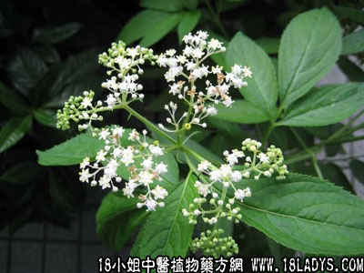

走马箭(中药材植物名:蒴翟)(植物科目:忍冬科)

别名：只零叶。
植物名：蒴翟。
生长环境：本品为亚灌木，常生于荒芜空地上或废墟附近的草地上，林下肥沃的土壤也有它的分布。
分布：我国和日本、马来西亚和东非。
入药部分：根。
自采地点：郊外湿润地。
性味：性平、味咸、有猫屎臭。
功能：祛风消肿、舒筋活络、活血祛风湿。
主治、用量和用法：1、过劳疲倦：用干根1至2两，清水煎服；2、手脚酸痛无力：用干根1至2两，清水煎服。或加鸡脚同煎；3、筋骨痛：用干根1至2两，清水煎服；4、风湿痹痛：用干根1至2两，清水煎服。
验方：（治风湿手足痛方）臭屎茉莉5钱，走马箭5钱、半枫荷1两、枫香寄生5钱、千斤拔5钱，以上共五味，用五碗水煎成一碗服。
（方解）方中走马箭，臭屎茉莉头通经络、去寒湿。半枫荷、枫香寄生祛风利关节。千斤拔益肝补肾。合为祛风寒湿、补肝肾之剂。
（方歌）风寒湿痹邪侵入，马箭枫荷千斤拔，臭屎茉莉枫香寄，五味同煎快去疾。